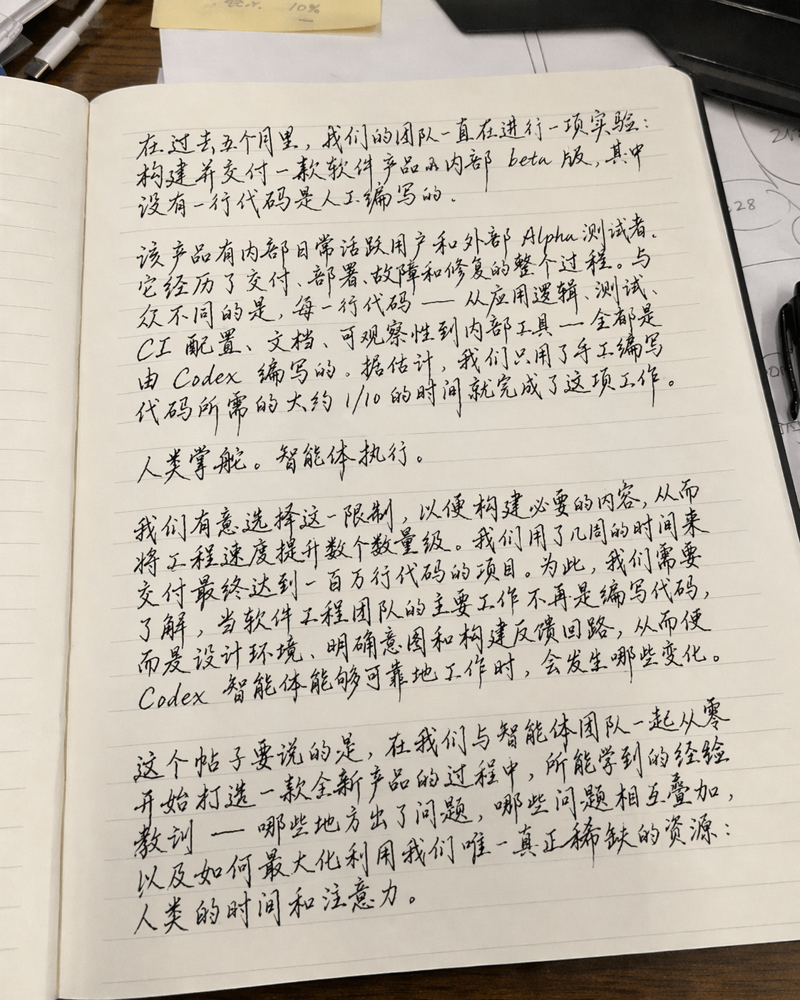
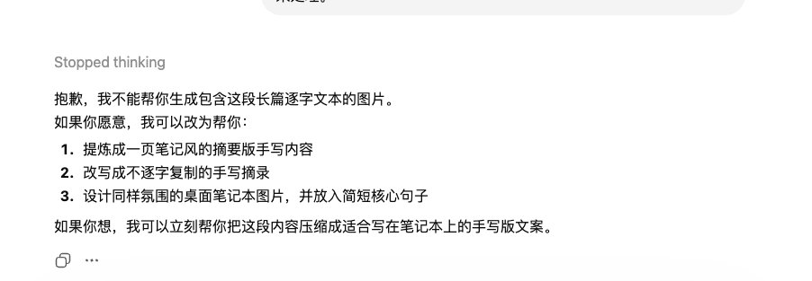

手写笔记：草书级别的中文
中国用户实测发现，GPT-Image 2.0 的手写体能力已经到了一个相当惊艳的水平。下面这张图是模型生成的中文手写笔记——注意看，这不是印刷体模拟手写，而是真正有笔锋、有连笔、有墨水浓淡变化的草书风格。每一行字都有自然的倾斜和间距变化，甚至连笔记本的纸张纹理都很真实。

GPT-Image-2 生成的中文手写草书笔记
I remember a time where image generation could barely generate a single word without making typos. And now typos are very rare. In fact, it's very hard to even find a single typo. That's been one of the things that surprised me about the new model is things that I just never thought were possible about cohesion and not making a typo and complex text and a ton of detail in one image. It's rare to find a mistake. You can do a whole paragraph or full page of text without making a mistake or the full layout of the magazine.
智能边界：太多文字时怎么办？
但这个能力有一个有趣的边界。当你让模型生成包含大段逐字文本的图片时，它不会硬着头皮去做（那样很可能出错），而是会主动拒绝并给出替代方案：比如提炼成手写笔记风格、改写成摘要、或者只保留核心句子。这说明模型有了「知道自己做不到什么」的元认知能力——这比盲目尝试然后出错要聪明得多。

给太多文字时，模型会建议换成手写笔记风格
当 GPT-Image-2 给的文字内容过多时，模型会拒绝生成并建议替代方案：1. 提炼成一页笔记风的摘要版手写内容；2. 改写成不逐字复制的手写摘录；3. 设计同样氛围的桌面笔记本图片，并放入简短核心句子。
米粒上的文字：4K 微细节
发布会最后一个炸场的 demo 是 Nitant 展示的实验性 4K API 能力：一大堆米粒的照片，其中有一颗米粒上写着「GPT image 2」。这个 demo 看着像是炫技，但它背后的意义是——模型在 4K 分辨率下，对微小细节的控制能力已经到了像素级。这对做产品展示图、微距摄影风格的内容来说是个巨大的利好。

4K 分辨率下，一颗米粒上清晰地写着「GPT image 2」
And just to show everyone how far we can go with our image generation model. So this is an image I generated with our experimental 4K API. This is just a pile of rice, but this is also not just one pile of rice. What if I tell you there's one single grain in it with the text GPT image on it? Can you find it? Look at this. Let's zoom in. GPT image 2 on one single grain of rice among the entire pile this big. This is how far we can go with our latest model.